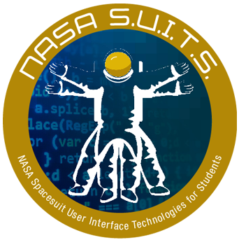

Spacesuit User Interface Technologies for Students
(SUITS)
(SUITS)
NASA SUITS (Spacesuit User Interface Technologies for Students) challenges students to design and create user interfaces for various assets on the lunar surface. Here is a link to the NASA SUITS website: NASA SUITS.
This challenge invites college students nationwide to design innovative user interface solutions that support future spaceflight missions. As part of NASA’s Artemis program, we are returning to the Moon to conduct scientific research, advance technology, and prepare for human missions to Mars. Achieving these goals requires new tools and systems that will help astronauts successfully carry out exploration and scientific operations on the surfaces of other worlds.
As we push deeper into space, it becomes increasingly important that astronauts on spacewalks have cutting-edge technologies that meet the demands of lunar and Martian environments. By participating in the NASA SUITS challenge, you’ll have the opportunity to help shape the future of human space exploration and improve the astronaut experience.
Not only am I a team member, I am also the Team Lead for this project.

.png)